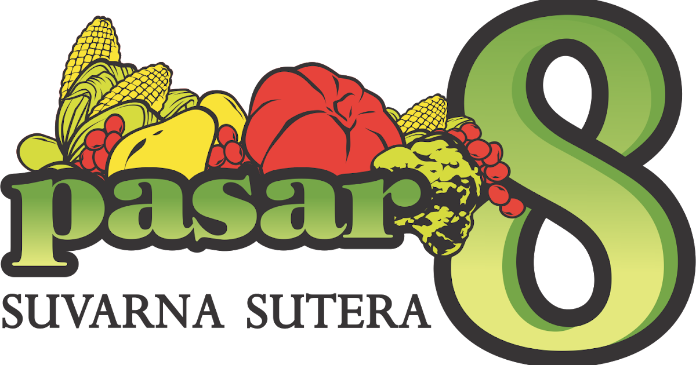

Pasar 8 Suvarna Sutera merupakan pasar modern yang menghadirkan lapak, kios dan ruko yang menyediakan berbagai macam bahan mentah seperti sayuran, buah, ikan, daging dan sembako.

Tentang kami
Pasar 8 Suvarna Sutera dibangun di atas lahan seluas 2
hektar yang menghadirkan konsep pasar keluarga yang bersih, pengaturan zona yang terencana,
rapih dan desain fasad yang modern Pengembangan Pasar 8 Suvarna Sutera direncanakan menjadi satu-satunya
sarana bagi warga Suvarna Sutera untuk mencari kebutuhan dengan harga tradisional, namun dengan suasana yang modern.
Pasar 8 Suvarna Sutera terletak di lokasi prima dikelilingi oleh lebih dari 10 klaster hunian,
tepatnya berada di Jalan Suvarna Utama yang merupakan jalur utama di kawasan hunian Suvarna Sutera, dan jalur penghubung antar klaster.